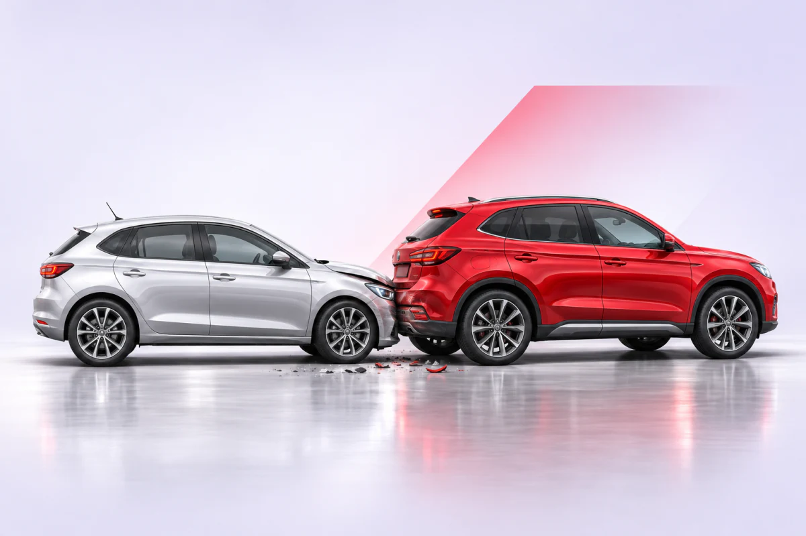
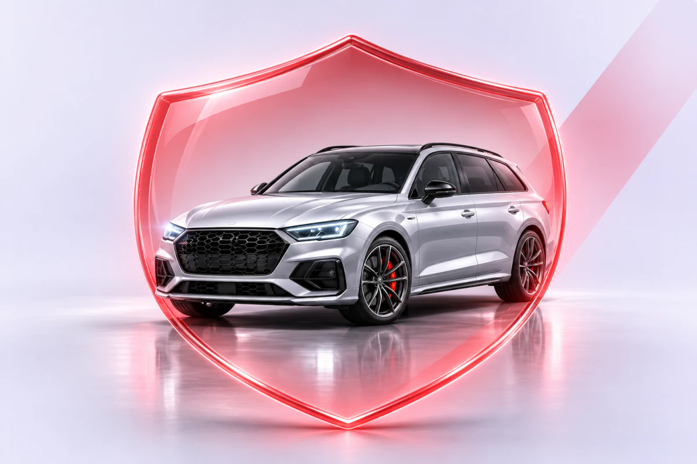
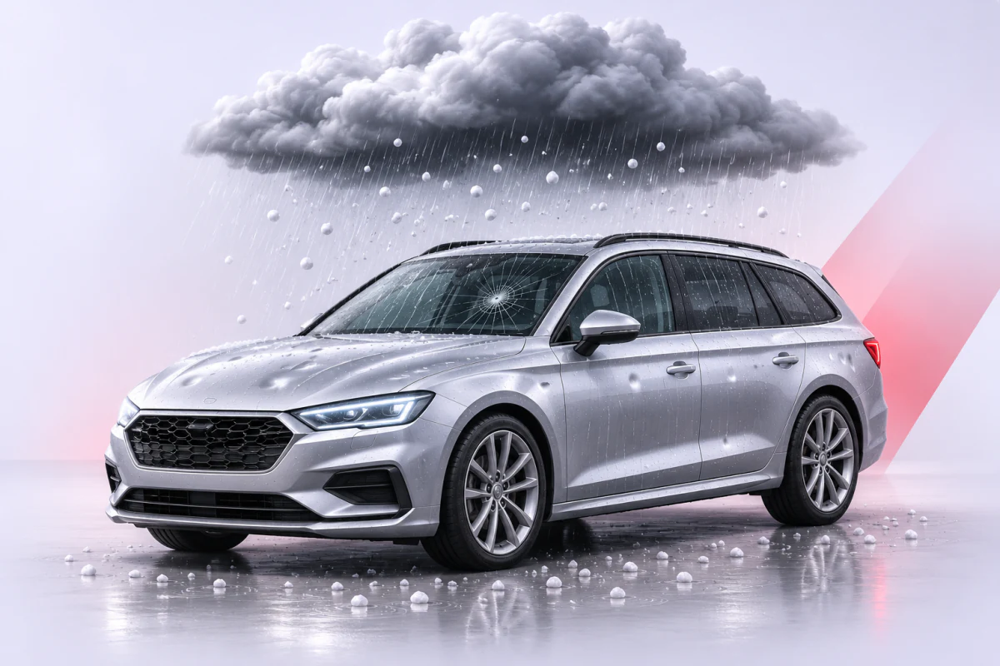
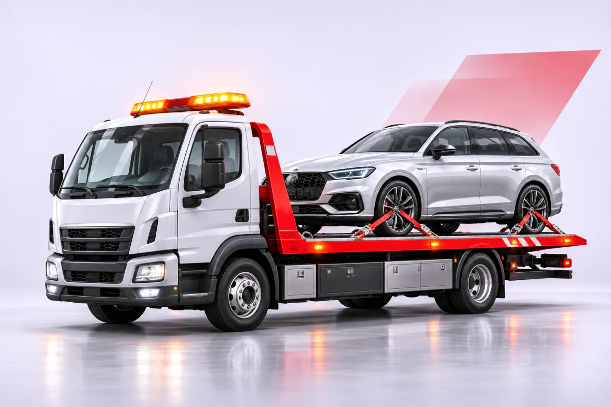
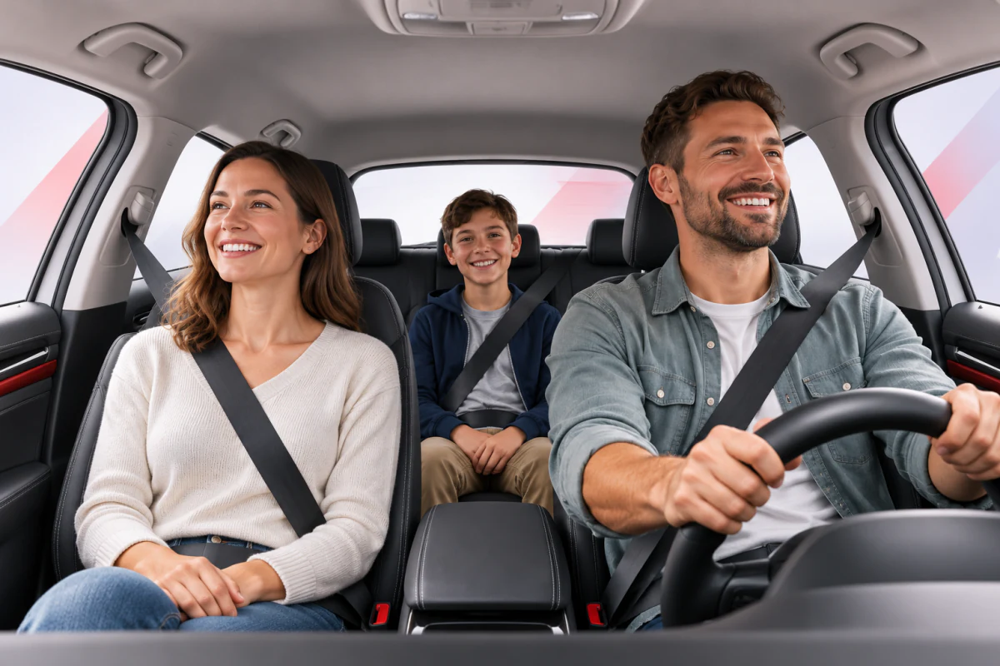
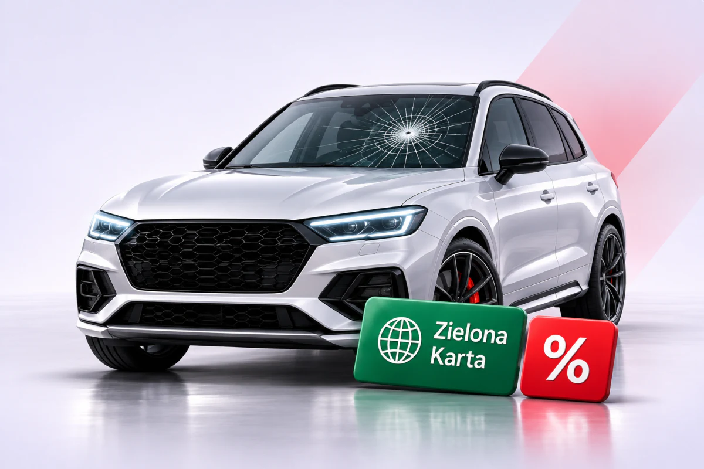

OC komunikacyjne
Obowiązkowe ubezpieczenie zarejestrowanego pojazdu. Chroni posiadacza lub kierowcę przed finansowymi skutkami szkód wyrządzonych innym osobom podczas użytkowania pojazdu.
Samochód
Pomagamy dobrać ochronę do wartości i wieku pojazdu, sposobu jego użytkowania oraz oczekiwanego sposobu likwidacji szkody. Ubezpieczamy samochody osobowe, dostawcze i ciężarowe, motocykle oraz inne pojazdy.
 SAM-01zdjęcie z kampanii, wygenerowane (ImageGen), do akceptacji klienta
SAM-01zdjęcie z kampanii, wygenerowane (ImageGen), do akceptacji klientaZakres polisy dobieramy do pojazdu, sposobu użytkowania i oczekiwanego poziomu ochrony.

Obowiązkowe ubezpieczenie zarejestrowanego pojazdu. Chroni posiadacza lub kierowcę przed finansowymi skutkami szkód wyrządzonych innym osobom podczas użytkowania pojazdu.

Dobrowolne ubezpieczenie własnego pojazdu. W zależności od wariantu może obejmować między innymi kolizję, wypadek, kradzież, wandalizm, żywioły lub kontakt ze zwierzęciem.

Węższy wariant ochrony obejmujący wybrane zdarzenia, na przykład kradzież, działanie żywiołów albo szkodę całkowitą. Dokładny zakres zależy od oferty ubezpieczyciela.

Pomoc po awarii, wypadku lub innym problemie z pojazdem. Polisa może obejmować holowanie, naprawę na miejscu, samochód zastępczy, nocleg lub wsparcie podczas podróży.

Świadczenie związane z następstwami nieszczęśliwego wypadku kierowcy lub pasażerów, zgodnie z zakresem wybranej polisy.

Możliwe dodatki obejmują ochronę szyb, zniżek i prawną, Zieloną Kartę oraz inne rozwiązania dopasowane do sposobu użytkowania pojazdu.
Wariant serwisowy
Serwis rozlicza koszt naprawy bezpośrednio z ubezpieczycielem.
Warunki polisy określają rodzaj części oraz zasady naprawy.
Wariant partnerski
Towarzystwo rozlicza koszt naprawy bezpośrednio z serwisem.
Cena polisy może być niższa niż w wariancie serwisowym.
Wariant kosztorysowy
Ubezpieczyciel wycenia szkodę i wypłaca ustalone odszkodowanie.
Sam wybierasz miejsce i sposób naprawy oraz rozliczasz jej koszt.
Najczęściej potrzebne są dane właściciela i pojazdu, informacje o sposobie użytkowania oraz dotychczasowej ochronie. Dokładną listę podamy po ustaleniu rodzaju polisy.
Cena jest ważna, ale trzeba porównać również zakres, sumy, limity, sposób likwidacji szkody i wyłączenia. Pomagamy wyjaśnić różnice między wariantami.
Kontakt
Sprawdzimy dostępne warianty i wyjaśnimy najważniejsze różnice.